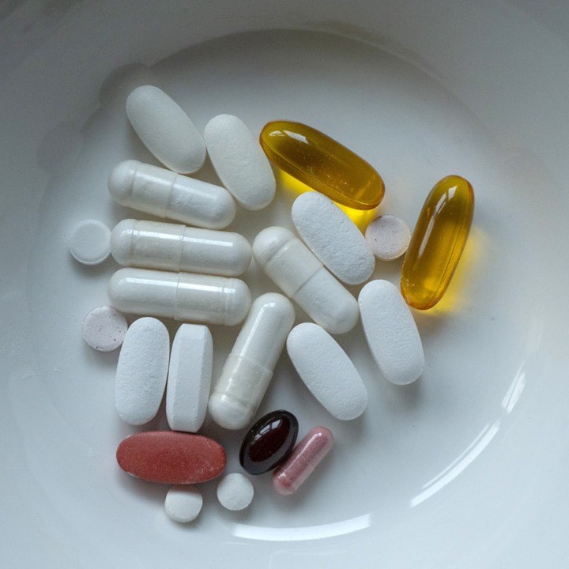
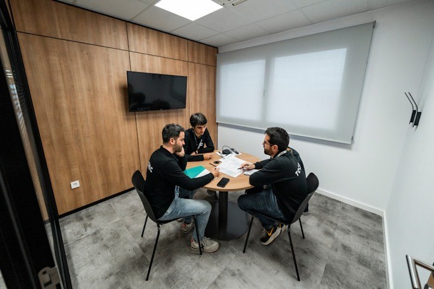
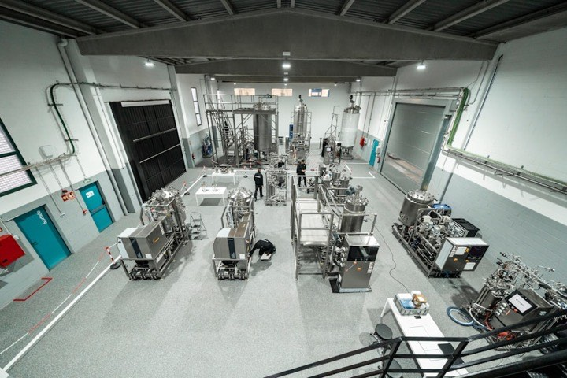
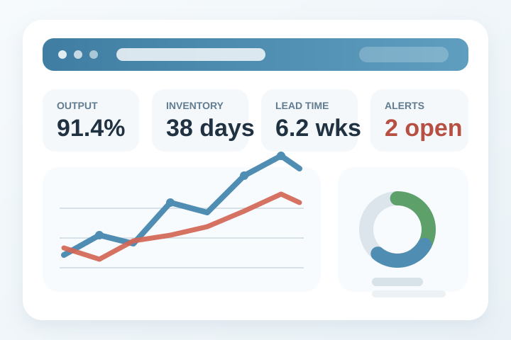
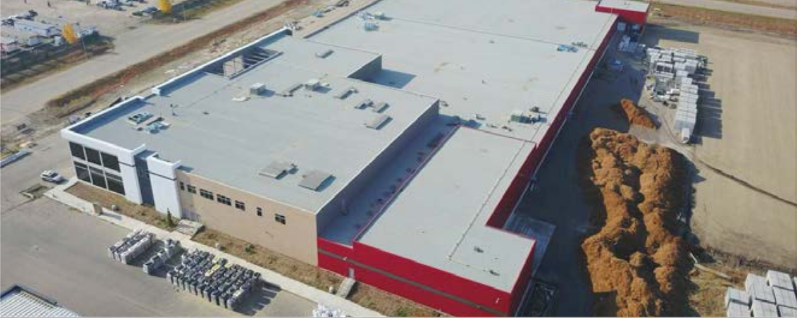

Strategy
Health Canada shortage plan
Ottawa treats shortages as an ongoing problem.
Domestic supply for the generic medicines on Health Canada's Critical and Vulnerable Drug List.
The shortage strategy, the priority list, the stockpile, and the coordination all exists. A domestic manufacturer for the shortage-prone generic medication does not.
Ottawa treats shortages as an ongoing problem.
Ottawa has already named the medicines that matter most in a shortage.
Readiness rules are tightening, though the final regulations aren't set.
A federal stockpile exists and already holds medicines.
The task force is meeting now and is built to review proposals like this one.
Buy Canadian, emergency readiness, and domestic-capacity policy have all moved in the last year.
Generics are three-quarters of Canadian prescriptions. Shortages recur every year. Almost nothing is made here.
“Manufacturing disruptions now account for 62 percent of drug shortages.”
This is a structural problem, not a one-time event.
When an oral antibiotic supply chain breaks, here's how it plays out.
Pharmacies feel it in weeks. Supply stabilizes in months. Nobody has a clear view while it's happening.
The 2024-2028 Building Resilience plan lays out eight priorities. None of today's suppliers are delivering the domestic production piece.
Names the medicines where shortages do the most harm
Draft rules are raising inventory and planning requirements
Stronger enforcement and wider reporting rules
Clearer national data; a new platform lands in 2026-2027
Spot shortages earlier with better data
A secure channel for demand and inventory data
Clearer information for clinicians and patients
Continuing regulatory updates
"The exchange of information about product demand and inventories continues to be a challenge, with current data-sharing practices making it very difficult to know where the pressures are in the supply chain."
Health Canada, PHAC/NESS, and PSPC cover most of what's needed. The only open question is which one activates when a shortage hits.

Owns the shortage plan, the CVDL, and the case for a pilot.
Runs the federal stockpile and already handles medicines.
Builds the contract vehicle if a pilot is approved.

The current cross-department review table.
Regional manufacturing support if the health case clears.
A backup route for molecules with clear defence use.
Provinces still buy the medicines.
The federal route opens only when a shortage justifies it.
The December 2025 CVDL and the IQVIA data give us 82 molecules across five tiers. Orals are the best starting point. The rest of the list covers stockpile, hospital, and lower-volume use.
Start with the medicines that are critical and routinely short. Expand into stockpile, hospital, and broader coverage from the same list.
We spend about $40K/year on IQVIA volume data. It doesn't track shortages, so we combine it with other sources.
First-phase orals: amoxicillin, ciprofloxacin, lithium, and similar CVDL molecules.
Electrolytes and additives: sodium, calcium, magnesium, potassium, dextrose, selenium, thiamine.
Urgent-care medicines: epinephrine, naloxone, atropine, norepinephrine, oxytocin.
Complex anti-infectives, oncology, analgesics, and specialty — later phases, not now.
Ottawa doesn't need new policy. It needs to line up the tools it has.
A plan, not a supplier.
Names the medicines that matter most in a shortage.
Raises the bar on Canadian inventory and shortage planning.
The clearest federal stockpile we have.
Opens a federal route when a medicine has defence or readiness value.
Allows a Canadian-supply preference where procurement rules permit it.
Gives proposals a review table, not just an audience.
Ottawa has funded pharma manufacturing before.
Precedent: Ottawa backs health manufacturing when the public case is clear.
Faster review helps most when there's a domestic manufacturer to use it.
May improve national coordination on demand.
Can back an Edmonton-region build through regional programs.
We have federal direction. It doesn't produce medicine.
Readiness rules are stronger. Domestic production to back them isn't there yet.
The reserve exists. Refilling it still depends on offshore suppliers.
Funding programs exist. Oral generics aren't the named target.
France links essential-medicine supply to relocation, shortage rules, and clear government signals that attract private investment.
Japan treats pharma capacity as economic security and pays to keep backup and emergency production standing.
Defence readiness and life sciences is a side route here, not the main plan.
Canadian-supply preference exists but isn't clearly wired into medication buying.
Canada has funded health manufacturing before, but never with oral generics as the goal.
Faster review helps most when paired with domestic capacity.
Countries don't do this the same way.
The point: several tools used together, not one at a time.
Canada named the critical medicines. The response behind the list isn't built yet.
Inventory rules are tightening. The domestic backup behind them isn't there.
The security language exists. The permanent federal setup doesn't.
Canada has expedited approval. It doesn't have the standing federal setup the US has built.
"The US lesson isn't bigger spending. It's using several federal tools at once."
Medicine Place only works if it fits Canada's existing federal tools and comes in review-first, not contract-first.
Pharma services experience, an Edmonton-region facility, an oral-first starting list, Glass Box reporting, and private capital tied to milestones.
Supports the shortage plan, the CVDL, safety-stock rules, NESS, task-force review, and regional development — without touching provincial buying.
Domestic supply for CVDL medicines.
Starts with the medicines Ottawa already prioritizes.
Strengthens Canadian inventory.
A candidate stockpile partner.
Relevant for emergency-response molecules.
Canadian content for selected federal supply.
Ready for federal review.
Privately funded, with room for support if needed.
Oral generics are the gap.
Works with expedited review.
One platform, one review.
Edmonton-region manufacturing base.
This is a first step on Canada's shortage-prone generics — not a plan to replace the whole market.
Medicine Place fits because it's narrow, phased, and built around shortages — not a procurement overhaul.

A standby Canadian supply that turns on only when a shortage, stockpile, or readiness need calls for it.
Start with lower-complexity oral molecules that already go short.

Clearer production, inventory, and supply-chain data than the current market provides.
Privately financed, tied to milestones, contracted demand, and phased scale-up.
Illustrative facility and layout showing how this would be built.


Edmonton-region, privately financed, phased oral-first build, targeting selected CVDL medicines.
Edmonton-region.